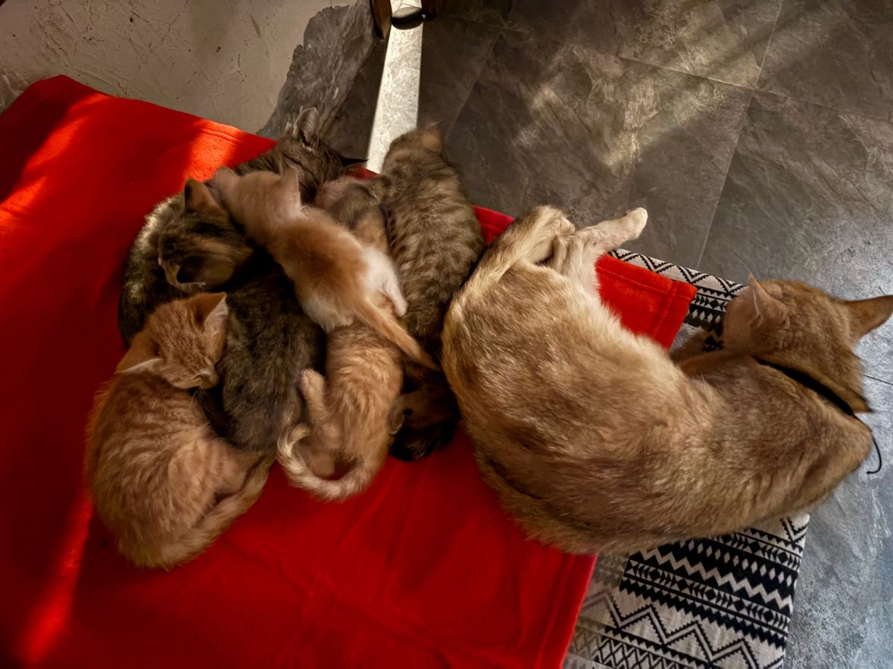

去年 10 月，FC 在南塘出差，遇到了一只猫。
它叫呦唬，是一只类似金渐层的母猫。那天它抓了一只老鼠。 之后，它开始在 FC 房门口驻留。夜里，在他乡出差，FC 回到住处， 门口有一只不会说话的生命，在那里陪伴着他。
也许是本能驱使着它寻找食物，但它却选择在 FC 门前驻留。 也许是出于安全感，也许是饥饿感。它的出现，让 FC 的生活历程中闯进了不同的思考。
一只猫和一个人，在异乡的夜里，就这样有了互动。跨物种的生命，彼此有了交集。
这就是 meow 生活的起点。


这不是一个计划，这是一种生活
meow 生活不是一个计划。
它是一种生活——人与人之间、人与宠物之间，一种生活方式的构建。 欢迎大家来这里，体会这种生活。
去年 10 月到今年 5 月，店里做繁育孵化。呦唬在今年 8 月 21 日生下了 7 只小猫，五黑二黄，顺利存活，脱离了哺乳期。9 月底跑不见了两只， 现在还剩 5 只：心祈貳、心祈寺、心祈伍、心祈陸、心祈日。
再加上后来陆续来的猫：月月从家里带来的黑猫咪咪，艺术共创营期间来的图图和芝麻， 文月收养的蛋黄，白腹黄背的奶香泡，伦峯老师捡的后腿瘫痪、只能靠前腿爬行的马泡， 刘姨家猫生崽后送来的深橘小猫小黄豆，文君带来的很黏人的黑熊。
现在，素社小院里一共有 14 只猫。




猫咪们
- 呦唬（母）：第一只遇到的猫，类似金渐层。今年 8 月 21 日生下 7 只小猫（五黑二黄），都顺利存活、脱离哺乳期。
- 咪咪（公）：黑色的猫，月月（杨文月）从家里带来南塘素社小院。
- 图图：艺术共创营期间陆续来的猫。
- 芝麻：艺术共创营期间陆续来的猫。
- 蛋黄：文月收养的猫。
- 心祈貳：呦唬的孩子。9 月底只剩 5 只（3 黑 2 黄），这是其中之一。
- 心祈寺：呦唬的孩子。
- 心祈伍：呦唬的孩子。
- 心祈陸：呦唬的孩子。
- 心祈日：呦唬的孩子。
- 奶香泡：白腹黄背的猫。
- 马泡：伦峰老师在南塘小住期间捡的猫，后脚双腿瘫痪，只能用前二脚爬行。
- 小黄豆：深橘色的猫，约一个月大。11 月初乡亲刘姨家里的猫生崽，母猫没有奶水、死了几只崽，最后一只带来素社小院先养着，现在会吃会喝也会跑了。
- 黑熊：文君（振哥的哥）带来的猫，很粘人，穿着黑披肩的白底猫。
如今，FC 在为自己准备过冬
入冬在即。
FC 在为自己准备过冬的时候，想起了猫咪的过冬到底该怎么办。
南塘的冬天，院子里的猫要去哪里？它们需要一个能挡风、能取暖的地方。 需要有人记得，它们也需要过冬。
所以，现阶段，大家一起筹一个猫屋。
猫屋不是一个项目，它是这个生活里当前的一站。就像呦唬去年 10 月闯进 FC 的生活一样， 猫屋是这个生活自然长出来的下一步。
11 月 15 日，大家在南塘动手建设猫屋。11 月 16 日到 18 日，秋假的三天快闪。 约 15 个孩子、3–4 个亲子家庭，招 1–2 个大哥哥大姐姐。不收费，食宿自理。 材料主要是丙烯。经费用的是第四期的一部分，加上第三期的剩余。
这里不收门票，也不卖东西。大家就是想趁天还没太冷，一起给猫搭个屋。
来不来都可以。冬天照常会来，猫也照常在院子里。